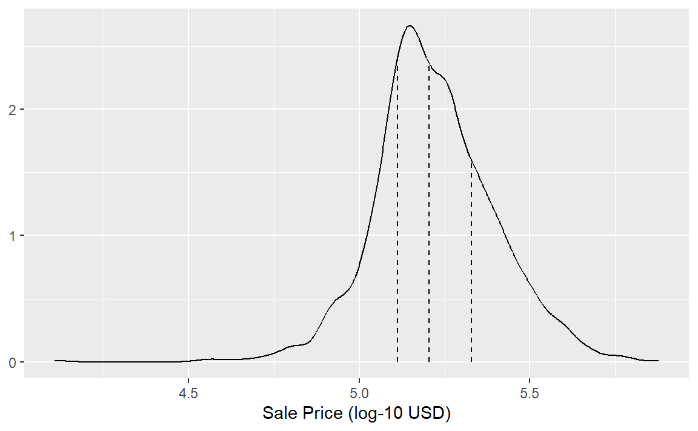

library(tidymodels)
#> ── Attaching packages ─────────────────────────────────── tidymodels 1.4.1 ──
#> ✔ broom 1.0.9 ✔ recipes 1.3.1
#> ✔ dials 1.4.2 ✔ rsample 1.3.1
#> ✔ dplyr 1.1.4 ✔ tailor 0.1.0
#> ✔ ggplot2 3.5.2 ✔ tidyr 1.3.1
#> ✔ infer 1.0.9 ✔ tune 2.0.0
#> ✔ modeldata 1.5.1 ✔ workflows 1.3.0
#> ✔ parsnip 1.3.3 ✔ workflowsets 1.1.1
#> ✔ purrr 1.1.0 ✔ yardstick 1.3.2
#> ── Conflicts ────────────────────────────────────── tidymodels_conflicts() ──
#> ✖ purrr::discard() masks scales::discard()
#> ✖ dplyr::filter() masks stats::filter()
#> ✖ dplyr::lag() masks stats::lag()
#> ✖ recipes::step() masks stats::step()
tidymodels_prefer()
# Set the random number stream using `set.seed()` so that the results can be
# reproduced later.
set.seed(501)
data(ames)
ames <- ames %>% mutate(Sale_Price = log10(Sale_Price))
# Save the split information for an 80/20 split of the data
ames_split <- initial_split(ames, prop = 0.80)
ames_split
#> <Training/Testing/Total>
#> <2344/586/2930>5 Spending our Data
创建一个有用的模型有几个步骤，包括参数估计、模型选择与调优以及性能评估。在一个新项目开始时，通常会有一个初始的有限数据池可用于所有这些任务，我们可以将其视为可用的数据预算。应该如何将数据应用于不同的步骤或任务呢？数据分配的理念是建模时首先要考虑的重要问题，尤其是在涉及经验验证时。当数据被重复用于多项任务，而非从有限的数据预算中谨慎“使用”时，某些风险会增加，例如加剧偏见的风险或因方法误差产生的复合效应的风险。
当有大量数据可用时，一个明智的策略是为不同的任务分配特定的数据子集，而不是将尽可能多（甚至全部）的数据仅分配给模型参数估计。例如，一种可能的策略（当数据和预测变量都很充足时）是，在考虑参数估计之前，先使用特定的数据子集来确定哪些预测变量是有信息价值的。如果可用的初始数据量不是很大，那么在数据的“使用”或分配方式和时间上就会存在一些重叠，因此，一套可靠的数据使用方法就显得很重要。
本章将演示为不同目的对我们初始的样本池进行拆分（即制定数据预算）的基本方法。
Common Methods for Splitting Data
经验模型验证的主要方法是将现有的数据池分成两个不同的集合，即训练集和测试集。训练集通常占数据的大部分，用于开发和优化模型；这些数据是模型构建的试验场，在这里可以拟合不同的模型、研究特征工程策略等等。作为建模从业者，我们在建模过程的绝大部分时间里，都以训练集为基础来开发模型。测试集会被保留起来，直到选出一两个最有可能成功的模型方法之后，就会被用作最终的评判标准，来确定模型的有效性；至关重要的是，测试集只能查看一次；否则，它就会变成建模过程的一部分。我们应该如何进行这种数据拆分呢？答案取决于具体情境。
假设我们将80%的数据分配给训练集，剩下的20%用于测试。最常用的方法是使用简单随机抽样。rsample包提供了用于进行此类数据拆分的工具；initial_split()函数就是为此目的而创建的。它将数据框以及要放入训练集的比例作为参数。我们对Ames数据集进行拆分：
打印的信息表明了训练集中的数据量（n=2,344）、测试集中的数据量（n=586）以及原始样本池的大小（n=2,930）。对象ames_split 是一个rsplit对象，仅包含分区信息；要获取生成的数据集，我们还需应用两个函数：training()和testing()。生成的结果是数据框，具有与原始数据相同的列，但每个集合只有相应的行。
ames_train <- training(ames_split)
ames_test <- testing(ames_split)
dim(ames_train)
#> [1] 2344 74简单随机抽样在很多情况下是适用的，但也存在例外。在分类问题中存在显著的类别不平衡时，即一个类别的出现频率远低于另一个类别，使用简单随机抽样可能会随意地将这些不常见的样本不成比例地分配到训练集或测试集中。为避免这种情况，可以采用分层抽样。训练集/测试集的划分在每个类别内部单独进行，然后将这些子样本组合成整体的训练集和测试集。对于回归问题，可以将结果数据人为地分箱为四分位数，然后分别进行四次分层抽样。这是一种有效的方法，能使训练集和测试集中结果的分布保持相似。Ames房产数据的销售价格结果分布如 Figure 1 所示。
sale_dens <-
density(ames$Sale_Price, n = 2^10) %>%
tidy()
quartiles <- quantile(ames$Sale_Price, probs = c(1:3) / 4)
quartiles <- tibble(prob = (1:3 / 4), value = unname(quartiles))
quartiles$y <- approx(sale_dens$x, sale_dens$y, xout = quartiles$value)$y
quart_plot <-
ggplot(ames, aes(x = Sale_Price)) +
geom_line(stat = "density") +
geom_segment(
data = quartiles,
aes(x = value, xend = value, y = 0, yend = y),
lty = 2
) +
labs(x = "Sale Price (log-10 USD)", y = NULL)
quart_plot

如第4章所讨论的，销售价格分布呈右偏态（尾巴在右侧），在分布中心的两侧，低价房屋的数量比例多于高价房屋。简单分割在这里存在一个问题，即高价房屋在训练集中可能无法得到充分体现；这会增加我们的模型在预测此类房产价格时效果不佳的风险。 Figure 1 中的虚线垂直线标示了这些数据的四个四分位数。分层随机抽样会在每个数据子集中进行80/20的分割，然后将结果合并。在rsample中，这可以通过strata参数（只能使用单个列）来实现：
使用分层抽样的弊端很少，是否存在随机抽样并非最佳选择的情况呢？一种情况是当数据具有显著的时间成分时，例如时间序列数据。在这种情况下，更常见的做法是使用最新的数据作为测试集。rsample包包含一个名为initial_time_split()的函数，它与initial_split()非常相似。不同于随机抽样，prop参数表示数据的前一部分中应有多大比例用作训练集；该函数假设数据已经按适当的顺序预先排序好了。
应该分配用于拆分的数据比例在很大程度上取决于当前问题的背景。训练集中的数据过少会妨碍模型找到合适的参数估计值。相反，测试集中的数据过少会降低性能估计的质量。统计学界的部分人士普遍不赞成使用测试集，因为他们认为所有数据都应用于参数估计。尽管这个论点有其可取之处，但拥有一组无偏的观测数据作为模型质量的最终评判标准是一种良好的建模实践。只有当数据少到离谱时，才应避免使用测试集。
What About a Validation Set?
在描述数据拆分的目标时，我们特别指出测试集是用来正确评估最终模型性能的数据。这就引出了一个问题：“如果我们直到测试集才衡量性能，那我们怎么知道什么是最好的呢？”经常会听到有人用验证集来回答这个问题，尤其是在神经网络和深度学习的文献中。在神经网络发展的早期，研究人员意识到，通过重新预测训练集样本來衡量性能，会得到过于乐观的结果（明显不切实际）——模型过拟合，也就是说，模型在训练集上表现很好，但在测试集上表现很差。为了解决这个问题，人们会留出一小部分验证集数据，在网络训练过程中用它来衡量性能。一旦验证集的错误率开始上升，训练就会停止。换句话说，验证集是在使用测试集之前，大致了解模型表现的一种手段。
验证集是训练集的一个子集，还是数据初始划分中的第三部分，这在很大程度上只是语义上的问题。
验证集将在第10.2.2节中作为训练集上使用的重采样方法的一种特殊情况进行更详细的讨论。如果您打算使用验证集，可以从一个不同的拆分函数开始：
现在打印分割结果会显示训练集（1,758）、验证集（586）和测试集（586）的大小。要获取训练、验证和测试数据，使用的语法相同：
ames_train <- training(ames_val_split)
ames_test <- testing(ames_val_split)
ames_val <- validation(ames_val_split)第10.2.2节将演示如何使用ames_val_split对象进行重采样和模型优化。
Multilevel Data
在Ames房产数据中，一处房产被视为独立实验单元。从统计学角度来讲，可以合理假设一处房产的数据与其他房产的数据是相互独立的。但在其他应用场景中，情况并非总是如此：
对于纵向数据，例如，同一个独立实验单位可以在多个时间点被测量。一个例子是医学试验中的人类受试者。
一批制成品也可能被视为独立的实验单元。在重复测量设计中，会在多个时间点收集来自同一批次的重复数据点。
Johnson et al.（2018）报告了一项实验，在该实验中，研究人员对树干顶部和底部的不同树木进行了采样。在此，树木是实验单位，数据层次结构为树木内的树干位置内的样本。
第9章包含了其他例子。
在这些情况下，每个实验单元在数据集中会有多行数据。简单地对行进行重采样会导致一个实验单元内的部分数据进入训练集，而其他数据进入测试集。数据拆分应在数据的独立实验单元层面进行。例如，要对Ames房产数据集进行80/20的拆分，应将80%的房产分配到训练集。
Other Considerations for a Data Budget
在决定如何使用你手头的数据时，还要记住几件事：
首先，将测试集与任何模型构建活动隔离开来至关重要。在阅读本书时，要留意在特定时间哪些数据会暴露给模型。当训练集之外的数据被用于建模过程时，就会出现信息泄露问题。例如，在机器学习竞赛中，测试集数据可能会在不提供真实结果值的情况下给出，这样就能对模型进行评分和排名。一种可能提高分数的方法是，使用训练集中与测试集值最相似的数据点来拟合模型。虽然测试集并未直接用于拟合模型，但它仍然有着很大的影响。一般来说，这种技术存在很大问题，因为它会降低模型的泛化误差，以优化在特定数据集上的性能。在训练过程中，还有更隐蔽的方式会用到测试集数据。将训练数据和测试集放在不同的数据框中，这是一个小小的检查措施，可确保不会意外发生信息泄露。
其次，对训练集进行子采样的技术可以缓解特定问题（例如类别不平衡）。这是一种有效且常见的技术，它会有意使训练集数据偏离其抽取自的总体。至关重要的是，测试集要继续反映模型在实际应用中会遇到的情况。换句话说，测试集应该始终与将要输入给模型的新数据相似。
接下来，在本章开头，我们就警告过不要将相同的数据用于不同的任务。第10章将讨论可靠的、数据驱动的数据使用方法，这些方法将降低与偏差、过拟合和其他问题相关的风险。其中许多方法都应用了本章介绍的数据拆分工具。
最后，本章中的考量适用于开发和选择可靠的模型，这也是本书的主要主题。在为生产环境训练最终选定的模型时，在确定其在新数据上的预期性能后，从业者通常会使用所有可用数据来获得更优的参数估计。
Chapter Summary
数据拆分是模型实证验证的基本策略。即便在数据收集不受限制的时代，一个典型的建模项目所拥有的合适数据量也是有限的，因此有必要明智地使用项目数据。在本章中，我们讨论了将数据划分为不同组以进行建模和评估的几种策略。
在这一节点，用于数据准备和拆分的重要代码片段如下：
library(tidymodels)
data(ames)
ames <- ames %>% mutate(Sale_Price = log10(Sale_Price))
set.seed(502)
ames_split <- initial_split(ames, prop = 0.80, strata = Sale_Price)
ames_train <- training(ames_split)
ames_test <- testing(ames_split)